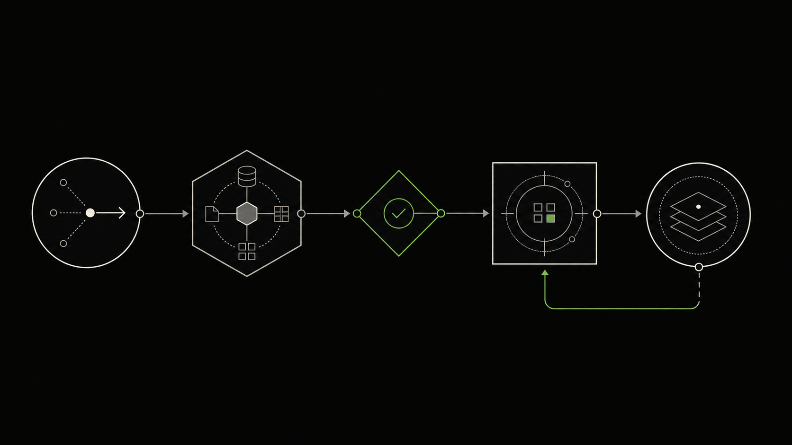

- 任务高频，步骤基本清楚员工每天重复查资料、录系统、发通知或追状态。
- 系统有接口或可控集成方式至少能在测试环境连接必要知识和工具。
- 失败后可以由人接住有明确审批、转人工或回退方式，不让 Agent 单独承担高风险决定。
Enterprise Agents & Workflows
企业 Agent 与工作流
先选一条真实流程，验证 Agent 能不能稳定完成任务。我们会把知识、系统操作和人工审批接起来，用真实样本检查结果。
- 约 2 周
- 首轮受控验证
- 1 条流程
- 建议起步范围
- 负责人 + 接口 + 样本
- 企业侧关键准备
A quick check
这项服务现在
适不适合？
如果下面的启动条件还不具备，先补条件会更省时间。
- 流程本身还在争议中如果团队连现有步骤和责任都没有共识，先做流程梳理。
- 希望 Agent 自主做高风险最终决定授信、录用、诊断等决定需要人负责，不能把责任交给模型。
- 拿不到系统、样本或权限没有真实输入和可控工具，只能做演示，无法判断是否值得实施。
Where it gets stuck
Agent 能回答问题，不代表它能进入真实流程。
真正影响上线的是任务边界、系统权限、异常处理和人工责任。
任务被切成很多人工接力
员工在邮件、表格和多个系统之间复制信息，任何一步漏掉都要返工。
Demo 能跑，异常没人接
正常样本看起来顺利，遇到资料缺失、权限不足或系统失败就停住。
责任边界没有进入设计
Agent 能调用哪些工具、哪些动作必须审批、出错后谁处理没有写清。
What changes
两周后，企业要拿到继续、调整或停止的依据。
验证结果会说明这条流程能否稳定运行，还缺哪些接口、数据和运营条件。

一条真实流程可以运行
Agent 使用真实知识和系统完成任务，结果会写回流程。
权限和人工接管明确
每个工具、动作和审批点都有范围，异常能回到人手里。
质量有评估基线
常见任务、边界样本和失败情况可以重复测试。
生产投入有决定
企业知道继续实施需要哪些接口、数据、预算和运营责任。
Scope
只接通完成这条流程需要的能力。
不默认上多 Agent 或大平台。先把知识、工具、审批和回退接稳。
知识检索与引用
从制度、产品、项目和文档中找答案，并显示可核验来源。
工具与系统调用
连接 ERP、CRM、工单、邮件、数据库或内部 API。
多步任务编排
按顺序收集信息、调用工具、等待审批、更新状态和通知相关人。
人工审批与接管
为高风险动作、低置信度结果和异常设置人工处理。
评估、日志与成本
记录任务成功、工具调用、失败原因、延迟和模型成本。
部署与运行设计
确定云端、混合或私有环境，以及监控、回退和版本管理。
How it works
用五步完成一次受控验证。
正常样本要跑，资料缺失、权限不足和系统失败也要专门测试。
- 01
界定任务和成功标准
选定一个流程，写清输入、输出、不能做的事和当前基线。
阶段结果：任务定义与验收标准 - 02
拆流程、系统和异常
逐步核对工具、接口、权限、人工节点和失败处理。
阶段结果：流程图与系统依赖表 - 03
搭建受控验证版本
接入必要知识和工具，让 Agent 跑通真实样本。
阶段结果：可工作的验证版本 - 04
用基准样本测试
覆盖常见任务、边界输入、应拒绝和应转人工的情况。
阶段结果：评估结果与失败清单 - 05
做上线或停止决定
说明生产化所需改造、运营责任、预算和剩余风险。
阶段结果：实施路线与进入决定
Deliverables
工作版本和评估证据一起交付。
企业可以看到 Agent 做了什么、哪里失败，以及为什么值得继续或应该停。
Agent 任务与边界说明
处理什么、不处理什么、成功标准、工具和人工责任。
可工作的流程版本
使用真实知识、样本、系统调用和审批节点完成任务。
评估集与测试报告
常见样本、边界样本、失败原因、质量、延迟和成本。
生产实施与运营方案
接口、权限、部署、监控、回退、团队和分期计划。
Team experience
这些经验，
如何用于你的项目。
这里收录了团队成员参与过的项目、公开案例和产品资料，用来说明我们如何工作。新项目仍要用你的目标、数据和验收标准重新判断。
把文档提取接入复核与下游流程
ForFlow 团队用字段蓝图、质量检查和人工复核把文档提取接进会计、税务和合同流程，重点是让结构化结果能继续使用。
- 这项服务可借鉴
- 从一种高频文档和一条下游流程起步，明确字段、失败样本、人工复核和写回边界。
- 经验边界
- 这是团队成员的过往工程方法。准确率和效率要用企业自己的文档样本重新测试。
定义成功，才让 Agent 进入生产
ForFlow 的评估方法把基准样本、工具调用、拒绝边界、生产 Trace 和失败样本回流接成一套可重复测试的流程。
- 这项服务可借鉴
- 试点阶段准备常见样本、边界样本和应转人工样本，避免把演示效果当成上线结论。
- 经验边界
- 页面中的阈值和数字来自团队过往工程实践，用于说明方法；新项目需要按自己的风险和容错标准重新设定。
FAQ
合作前，通常会问这些。
这里说明验证周期、生产边界和失败处理。
聊天机器人主要生成回答；Agent 还会在授权范围内查知识、调用工具、更新系统和等待审批，因此需要更严格的权限、评估和回退。
两周通常用于做受控验证，目标是跑通一条真实流程并暴露问题。生产上线取决于接口、权限、数据敏感度和异常复杂度。
不一定。根据数据分类、监管、延迟和成本选择云端、混合或私有环境。敏感数据可以留在企业内部。
先缩小职责和工具权限，再加输入输出校验、人工审批、日志、预算限制和异常回退。没有任何设计能保证零错误。
可以，前提是系统有可用 API 或其他可控集成方式。项目开始时会先确认权限、频率、失败处理和测试环境。
不一定。验证的价值就是支持继续、调整或停止的决定；效果不足或风险过高时，停止也是有效结果。
开始前，请准备这四项信息。
一条高频流程、当前步骤、需要连接的系统，以及不可接受的结果。